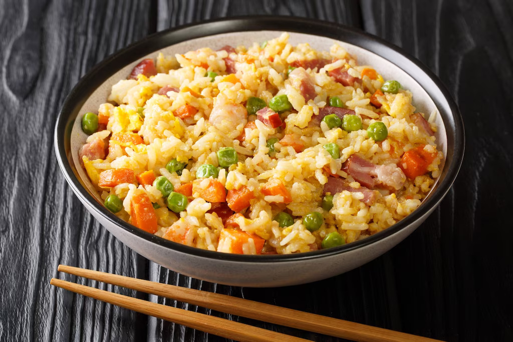

Yang Chow
⭐ ⭐ ⭐ ⭐ ⭐
Most Chinese restaurants, from high-end establishments to fast-food joints, offer different versions of fried rice. But what remains a staple on menus, alongside sweet and sour pork, siomai, and salt and pepper squid, is yang chow. You’ll rarely see a table without it, and no diner is too shy to bring home leftovers to enjoy the next day. The good news? You don’t need to head out anymore to have your fill of this hearty stir-fry. Follow this guide to making resto-style yang chow fried rice in under 30 minutes and with pantry usuals. It’s so satisfying that you won’t need to pair it with any other ulam. Next time you’re craving this all-in-one dish, try this recipe.
4 Persons
40 min.
Budget-Friendly

Ingredients
2 tbsp oil
6 cloves garlic, chopped
1 pc Knorr Shrimp Cube, mashed
1-2 pcs Chinese chorizo or ham, chopped
4 cups cooked, day-old rice
1/4 cup green peas
2-3 tbsp Knorr Liquid Seasoning
2 pcs eggs, beaten, cooked, and chopped
2tsbp sesane oil (optional)
chopped spring onion and toasted garlic
1/4 pc carrot, chopped
Directions
Adobong Kangkong
⭐ ⭐ ⭐ ⭐ ⭐
Do you love classic Filipino adobo but want to limit your meat intake? Go for a vegetarian version instead. Like the classic, you have endless varieties to choose from. Adobong kangkong is one; it uses nutritious, fiber-rich water spinach as its main ingredient. This leafy green cooks quickly and absorbs flavors like a champ. And don’t worry; you’ll still get that comforting, home-cooked adobo taste even without the meat. Plus, kangkong happens to be one of the most affordable veggies you can work with! Grab a bundle when you head to the market and try out this adobong kangkong recipe. It only takes 20 minutes max – perfect for weeknight dinners!
5 Persons
20 min.
Budget-Friendly

Ingredients
2 tbsp cooking oil
4 cloves garlic, chopped
1/2 cup water
1 pc Knorr Chicken Cube
1/4 cup vinegar
2 tbsp Knor Liquid Seasoning
3 bunches kangkong, leaves and soft stems picked
Directions
Spam Musubi
⭐ ⭐ ⭐ ⭐ ⭐
Three things make long drives worth it: good company, music, and snacks. For your next road trip, don’t settle for whatever you can scrounge up at the first convenience store. Pack homemade Spam musubi for the whole barkada!
4 Persons
20 min.
Average

Ingredients
3 tbsp cooking oil, divided
1 can Spam or any luncheon meat, sliced into 6-8 pieces
1/2 cup kimchi, chopped
3 cups day-old cooked rice
1/2 cup Lady's Choice Real Mayonnaise
1-2 tbsp sirracha or hot sauce
2 sheets nori, cut into quarters
Directions
Lumpiang Gulay
⭐ ⭐ ⭐ ⭐ ⭐
Create our delicious and easy to follow recipe for Lumpiang Gulay made extra special with Knorr Chicken Cubes. Enjoy it with your family!
5 Persons
45 min.
Budget-Friendly

Ingredients
2 tbsp cooking oil
1 pc onion, chopped
3 cloves garlic, chopped
1 cup togue
1 pc Knorr Pork Cube
1 pc carrots, sliced into strips
1 tali green beans, sliced into strips
1 pc sayote, sliced into strips
10 pcs lumpia wrapper
⅛ cup malunggay leaves
Directions
Easy Onigiri
⭐ ⭐ ⭐ ⭐ ⭐
Rice balls are a common feature in Japanese school lunch boxes. Moms love preparing them because of their affordability and effortless procedure. Plus, kids can’t get enough of them, especially if you shape them into cute cartoon characters. Want to give ‘em a try? Follow this onigiri recipe!
5 Persons
30 min.
Budget-Friendly

Ingredients
12 cups cooked Japanese or dinorado rice (soft and sticky)
1/2 cup rice vinegar
2 tbsp sugar
pinch of salt
2 (180 g) cans tuna flakes in brine or oil, drained
1/2 cup Lady’s Choice Real Mayonnaise
salt and pepper, to taste
nori or seaweed sheets, cut in half lengthwise
Directions
Chicharong Bulaklak
⭐ ⭐ ⭐ ⭐ ⭐
Who can resist freshly cooked chicharon bulaklak? That crunch, the tender fat, the hot oil that gushes out of each bite? It’s everything Filipino revelers look for in their bar chow – a deep-fried golden floret that goes well with ice-cold beverages.
5 Persons
80 min.
Budget-Friendly

Ingredients
2-3 kg chicharon bulaklak (pork ruffle fat), cleaned and cut into small pieces
2 tbsp black peppercorns
2-3 heads garlic, crushed
6 pcs bay leaves
1 tbsp rock salt
2 pcs Knorr Pork Cubes
water, to cover meat
oil, for deep-frying
spiced vinegar, to serve
Directions
Ginataang Gulay
⭐ ⭐ ⭐ ⭐ ⭐
The dish combines the sweetness and creaminess of the coconut milk with the fresh flavors and textures of your vegetables.
6 Persons
40 min.
Budget-Friendly

Ingredients
1 tbsp cooking oil
1/2 pc onion, chopped
1 clove garlic, chopped
1/4 pc kalabasa, peeled and cubed
1/2 bunch sitaw, sliced into 2 inches long
1 (29 g) pack Knorr Ginataang Gulay Mix, dissolved in 1 cup water
1 pc small small green siling haba, sliced
Optional: 1 cup malunggay leaves
1/4 cup shrimp, peeled
Directions
Kimbap
⭐ ⭐ ⭐ ⭐ ⭐
If you’re a fan of Extraordinary Atty Woo, you know that the adorable lawyer loves three things – her job, whales, and kimbap. She only eats these Korean rolls and even follows a ritual before each meal. She’s biased towards her dad’s kimbap recipe, but she also indulges in her bestie’s unique version.
4 Persons
35 min.
Budget-friendly

Ingredients
1 cup cooked rice
2 tbsp sesame oil
1 can tuna flakes in brine or oil, drained well
1 tbsp white onion, chopped finely
1/4 cup Lady’s Choice Real Mayonnaise
2 tbsp canola oil
4 pcs eggs
1/2 cup store-bought kimchi, chopped roughly
1 tbsp sugar
4 pcs nori sheets
4 pcs curly lettuce leaves
Directions
Calamares
⭐ ⭐ ⭐ ⭐ ⭐
There's no denying that deep-fried food is heaven-sent on any given day. Who can resist their fantastic crunch and flavor? Why do you think so many Filipino street food go through the fryer? French fries, fish balls, dynamite, and siomai are dependable picks. But what can outshine all these is a good calamares recipe.
5 Persons
15 min.
Average

Ingredients
2 tbsp sriracha/Hot sauce
1/2 cup Lady’s Choice Real Mayonnaise
1 pc Knorr Chicken Cube, mashed
2-3 pcs eggs, beaten
500 g medium squid, cleaned, peeled, and sliced into rings
pinch of ground black pepper
2 cups cooking oil
1/2 cup cornstarch
Directions
Fried Chicken
⭐ ⭐ ⭐ ⭐ ⭐
Want to make your fried chicken extra malinamnam? Follow this easy Knorr recipe and impress your loved ones with an ultra-flavorful ulam.
5 Persons
50 min.
Budget Friendly

Ingredients
12 ml Knorr Liquid Seasoning
250 g chicken cut ups
1 clove garlic
all purpose flour
cornstarch
Pinch of salt and pepper
cooking oil for frying
Directions
Bacsilog
⭐ ⭐ ⭐ ⭐ ⭐
Make your bacon silog recipe special by frying up rice with veggies. Use any cheese to make the cheese sauce for bacsilog. Try it with mozzarella!
5 Persons
25 min.
Average
Ingredients
1 cup evaporated milk
1/4 cup butter or margarine
1/2 pack quick-melting cheese, grated
1 tbsp Knorr Liquid Seasoning
pinch of finely ground black pepper
4 cups cooked rice
500 g bacon, cut into 1-inch pcs and cooked until crisp
4 fried eggs
Directions
Tokwa Sarciado
⭐ ⭐ ⭐ ⭐ ⭐
Make this budget-friendly tokwa recipe on busy weekdays! This tofu sarciado is simple, affordable, and bursting with flavor.
5 Persons
25 min.
Budget-Friendly

Ingredients
3 pieces tofu
1 piece egg
1 clove garlic chopped
1 piece onion chopped
1 piece tomato slice
1 piece chicken cube
Directions
Ginisang Carrots at Sayote
⭐ ⭐ ⭐ ⭐ ⭐
This heart health dish combines the fresh garden taste of carrots and sayote slices infused with rich pork flavors, topped with fried tofu for added textures.
5 Persons
25 min.
Budget-Friendly

Ingredients
1 tbsp oil
1 pc onion chopped
1 clove garlic chopped
1 piece sayote thinly sliced
1 piece carrot thinly sliced
1 Knorr Pork Cube
1 cup water
1 piece fried tofu cubed
Directions
Adobong Sitaw
⭐ ⭐ ⭐ ⭐ ⭐
This heart healthy dish combines the flavor of sautéed beans mixed with fried garlic cooked adobo-style, topped with fried fish.
5 Persons
25 min.
Budget-Friendly

Ingredients
15 ml cooking oil
5 g garlic chopped
250 g sitaw slice into 2 inches
½ pc Knorr Chicken or Pork Cube
250 ml water
15 g vinegar
30 g Knorr Liquid Seasoning
Directions
Chopsuey
⭐ ⭐ ⭐ ⭐ ⭐
Create our delicious and easy to follow recipe for Chopsuey made special with Knorr Pork or Beef Cubes. Serve this healthy meal to your family.
4 Persons
35 min.
Budget-Friendly

Ingredients
1 tbsp cooking oil
3 cloves garlic, minced
1/2 pc red onion, minced
1/4 cup chicken liver, sliced into bite-sized pieces
1/2 cup chicken breast fillet, cubed
pinch ground pepper
1/2 cup sayote, sliced
1/2 cup cauliflower florets, cut into bite-sized pieces
1/2 cup carrots, thinly sliced
3/4 cup water
1 pc Knorr Shrimp Cube
1/3 cup Baguio Beans, cut into bite-sized pieces
1/4 cup celery sticks and leaves, sliced
1/4 cup red and green bell peppers, sliced
1 cup cabbage, sliced into bite-sized pieces Option: use red cabbage for a healthier dish
1/2 cup singkamas (jicama), thinly sliced
2 tbsp oyster sauce
2 tbsp cornstarch dissolved in 2 tbsp water
Directions
Bokchoy curry
⭐ ⭐ ⭐ ⭐ ⭐
This creamy and sweet curry bokchoy dish combines your fresh vegetable taste with sweet pineapples, cooked in your creamy coconut milk sauce.
4 Persons
35 min.
Budget-Friendly

Ingredients
300 g baby pak choi (Bokchoy Chinese Cabbage)
1 red pepper
200 g oyster mushroom
1 tbsp vegetable oil
1 pack Knorr Ginataang Gulay Mix (29 g)
250 ml water
2 tbsp curry powder
140 g pineapple
3 tbsp sesame seeds
Directions
Ensaladang Talong
⭐ ⭐ ⭐ ⭐ ⭐
Ensaladang talong is a salad of roasted eggplant, tomatoes, and onions drizzled with a bright, tangy dressing. If it sounds simple, that’s because it is – but the flavor it packs is far from it. You get smokiness from the eggplants, sweetness from the tomatoes, and mild spice from the raw red onions. The sour-savory dressing ties everything together and makes it perfect for fried or grilled mains.
5 Persons
20 min.
Budget-Friendly

Ingredients
6 pcs large eggplants, washed
1 cup diced and deseeded tomatoes
1 pc red onion, diced
1/4 cup vinegar
1 tbsp Knorr Liquid Seasoning
1 tbsp brown sugar
a pinch of black pepper
Directions
Sopas
⭐ ⭐ ⭐ ⭐ ⭐
Create our delicious and easy to follow recipe for Sopas made special with Knorr Chicken Cubes. Serve this to your family for a heartwarming meal.
5 Persons
30 min.
Budget-Friendly

Ingredients
1 pc onion chopped
1 clove garlic chopped
2 cup water
1 Knorr Chicken Cube
1 bag 50g elbow macaroni
1 small egg piece carrot sliced diagonally
1/4 cup evaporada
Directions
Tuna Sandwich
⭐ ⭐ ⭐ ⭐ ⭐
Make a tuna sandwich healthier and creamier with Lady's Choice Real Mayonnaise. Upgrade this classic merienda with this quick recipe.
4 Persons
10 min.
Budget-Friendly

Ingredients
8 pcs sliced white bread
1 can tuna flakes in oil, drained
1 (80mL) pack Lady's Choice Real mayonnaise
1 tbsp chopped white onions
2 pcs ripe tomatoes, sliced into rings
1/2 pc cucumber, sliced thinly (optional)
2 bunches curly leaf lettuce, washed and drained well
Directions
Breakfast Sandwich
⭐ ⭐ ⭐ ⭐ ⭐
Prepare this quick and easy sandwich recipe for an American breakfast! Bacon, eggs and Lady’s Choice Bacon Spread make it a delightful on-the-road meal.
1 Person
8 min.
Budget-Friendly

Ingredients
3 tbsps Lady's Choice bacon Spread
1 pc bacon, fried, chopped
1 pc whole egg, fried
2 slices loaf bread
Choice greens as needed
Directions
Lugaw
⭐ ⭐ ⭐ ⭐ ⭐
Create our delicious and easy to follow recipe for Lugaw made extra special with Knorr Chicken Cubes. Enjoy it with your family!
4 Persons
25 min.
Budget-Friendly

Ingredients
1 tbsp cooking oil
1 pc onion, chopped
1 pc ginger, thinly sliced
¼ cup sticky rice
3 cup water
1 pc Knorr Chicken cube
2 pcs boiled eggs